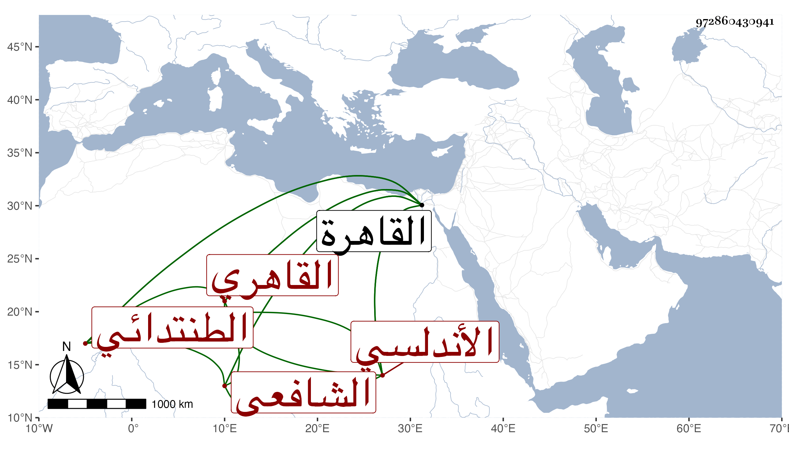

0902Sakhawi.DawLamic.ITO20230111-ara1.EIS1600.972860430941
Biography ID: 972860430941
أحمد بن عبد الرحمن بن عوض بن منصور بن أبي الحسن الشهاب الأندلسي الأصل الطنتدائي القاهري الشافعي أخو محمد الآتي . ولد سنة إحدى وخمسين وسبعمائة الطنتدي ونشأ بها فحفظ القرآن والحاوي وغيره ودخل القاهرة فعرضها على البرهان بن جماعة في ولايته الأولى ثم عاد إلى بلده وأكب على الاشتغال وحفظ ما نيف عن خمسة عشر ألف بيت رجز في عدة علوم منها تفسير الشيخ عبد العزيز الديريني ونظم المطالع للموصلي ثم قدم القاهرة قبيل الثمانين فقطنها ولازم الأبناسي والبلقيني وابن الملقن والزين العراقي وكذا قرأ على الضياء العفيفي وتميز ولا سيما في الفرائض وكأنه أخذها عن الكلائي ، وولي إعادة الحديث بقبة البيبرسية وإمامة الرباط بها والتدريس بالمنكوتمرية وخطب بجامع الحاكم ولكونه كان يقول في خطبته عند أمير المؤمنين عمر اقيدا بالخيرا ما لقيته السلطان منذ أسلم أنكر عليه يونس الواحي فلم يلتفت لإنكاره وقدر اجتماعهما تجاه الحجرة النبوية فقال يونس يا رسول الله إن هذا الرجل يقول كذا في حق صاحبك وأنا أنهاه فلا ينتهي فخجل الشيخ ، وتصدى لإقراء العلم فأخذ عنه الفضلاء كشيخنا ابن خضر ، وممن أخذ عنه العم والوالد . وكتب على جامع المختصرات شرحا في ثمان مجلدات وتوضيحا في مجلد ، وكان فقيها فرضيا متواضعا متقشفا على طريقة السلف ، قال شيخنا في معجمه اجتمع بي كثيرا وطالت مجالستي له والسماع من فوائده وكتب بخطه من تصانيفي كثيرا وكذا كتب عني أكثر مجالسي في الإملاء وسمع كثيرا علي ومعي وحصل هل في آخر عمره خلط في رجليه ثم في لسانه ثم مات في ثالث شوال سنة اثنتين وثلاثين ، وتبعه في ذكره ابن قاضي شهبة في طبقاته والمقريزي في عقوده ولم يذكره شيخنا في الأنباء وكان من مجاوريه ودفن في حوش البيبرسية رحمه الله .
